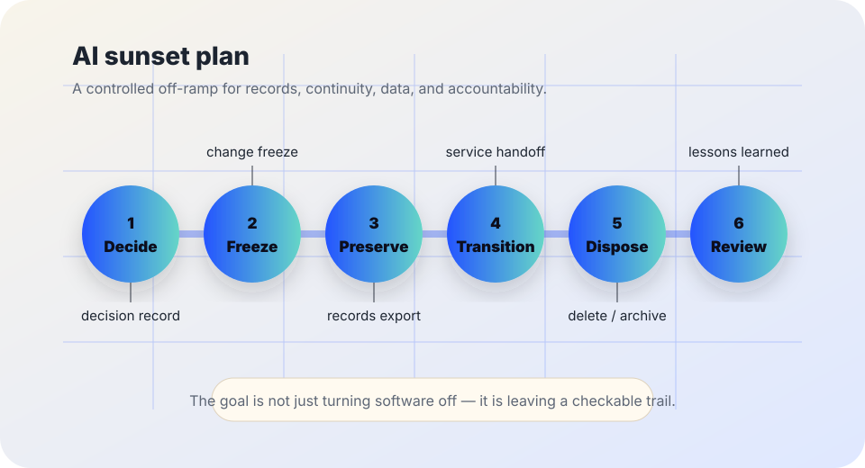

AI governance and offboarding
AI sunset plan starter.
A practical template for ending, replacing, or archiving an AI workflow while preserving records, service continuity, public notices, data handling, and accountability.
The short answer
Ending an AI system should be treated as a governed change, not as a quiet unplugging. A useful sunset plan names why the system is stopping, who owns the shutdown, what records must be preserved, what data must be exported or deleted, how people will keep getting service, and how affected users will be told where to go next.
A sunset plan is not anti-innovation. It is the exit path that makes experimentation safer: teams can pilot, narrow, pause, replace, or end AI uses without losing evidence, abandoning users, or leaving vendor and data obligations unresolved.

Why sunset planning matters
NIST’s AI Risk Management Framework frames AI risk management as an ongoing lifecycle practice: organizations govern, map, measure, and manage AI risks with documentation, monitoring, and accountability. OMB Memorandum M-24-10 directs U.S. federal agencies to manage AI use through governance, testing, monitoring, risk management, and safeguards for rights- and safety-impacting uses. Those practices include knowing when a system should stop or change course.
Records and data handling also continue after shutdown. The U.S. National Archives and Records Administration explains that federal records must be scheduled and managed according to approved records schedules, while CISA’s Secure by Design guidance emphasizes reducing technology risk through secure defaults and accountability across the product lifecycle. The practical lesson for civic AI is simple: offboarding should preserve what must be preserved, remove what should not persist, and keep enough evidence to explain what happened later.
1. Name the sunset trigger
Write the reason plainly. Do not hide a risk decision inside vague language like “strategic realignment.”
Evidence trigger
The system missed quality floors, produced recurring errors, did not deliver measured value, or failed hard-case review.
Risk trigger
Privacy, security, accessibility, discrimination, safety, or appeal concerns exceeded the agreed risk tolerance.
Scope trigger
The tool drifted into a new population, decision type, data use, or risk level that has not been approved.
Vendor trigger
Price, support, model changes, data terms, audit access, portability, or incident notice no longer supports accountable use.
Replacement trigger
A better non-AI, human-led, in-house, or lower-risk process now meets the need more safely or cheaply.
Time trigger
A pilot, policy exception, or temporary use reached its expiry date and did not earn renewal.
2. Use a six-step shutdown sequence
| Step | What to do | Proof to keep |
|---|---|---|
| Decide | Record the decision, owner, date, reason, risk level, services affected, and appeal or exception path. | Signed decision note, meeting minutes, risk-register update, and owner contact role. |
| Freeze | Stop new expansion, disable optional features, freeze model or workflow changes, and prevent new data categories from entering the system. | Change log, configuration snapshot, access list, and vendor confirmation when relevant. |
| Preserve | Save records needed for audit, public-records obligations, appeals, incident review, contract closeout, and lessons learned. | Retention schedule reference, export manifest, hashes or counts when useful, and storage owner. |
| Transition | Move users, staff, cases, forms, phone scripts, documentation, and escalation paths to the replacement process. | Continuity plan, staff notice, public notice, training note, and unresolved-case tracker. |
| Dispose | Delete, return, archive, or restrict prompts, uploads, outputs, logs, embeddings, accounts, API keys, and vendor-held data according to law, policy, and contract. | Deletion certificate or vendor attestation, archived record location, access revocation log, and exceptions list. |
| Review | Run a short after-action review: what signals were missed, which controls worked, who was burdened, and what future procurement or policy language should change. | After-action memo, updated checklist, procurement lessons, and next review date. |
3. Protect service continuity
Sunsetting should not make people disappear into a broken form, dead chatbot, or unsupported queue. Before turning anything off, answer these questions:
- What human, non-AI, or replacement workflow will handle new requests on the first day after shutdown?
- Which in-progress cases need manual review, re-routing, notice, translation, accessibility support, or deadline protection?
- Which web pages, forms, phone scripts, email templates, staff guides, public notices, and help-desk answers must change?
- Who can grant a temporary exception if shutdown creates a safety, health, benefit, rights, or service-continuity problem?
- How will affected people challenge, correct, or ask about AI-assisted outputs that were produced before the shutdown?
4. Separate records, data, and secrets
| Item | Sunset action | Common mistake to avoid |
|---|---|---|
| Official records | Retain, transfer, or dispose only according to the approved records schedule and legal hold status. | Deleting records because the software contract ended. |
| Personal or sensitive data | Minimize, restrict, delete, or archive according to law, policy, notice, consent, and retention rules. | Keeping exported data forever “just in case.” |
| Vendor-held data | Request return, deletion, retention limits, subprocessor confirmation, and written closeout evidence. | Assuming local account closure deletes vendor copies. |
| Prompts, outputs, logs, and embeddings | Map where they live, decide retention, and document whether they are records, evidence, temporary logs, or disposable artifacts. | Treating AI logs as harmless technical exhaust. |
| Secrets and access | Revoke API keys, OAuth grants, service accounts, shared mailboxes, admin roles, and automation tokens. | Leaving dormant credentials active after the tool stops. |
Starter sunset memo language
Copy, shorten, and adapt this into a local memo. Replace bracketed text with local facts.
5. Do not sunset quietly when people are affected
- Do not hide a harmful AI failure by deleting logs before records, appeals, incident response, or legal-hold questions are answered.
- Do not replace an AI tool with another automated workflow before checking whether the same risk simply moved.
- Do not leave public pages, consent language, appeal instructions, or staff scripts describing a system that no longer operates.
- Pause shutdown if turning the system off would interrupt a rights-, safety-, health-, or benefits-impacting service without a working continuity path.
- Do publish or share a plain-language explanation when affected people reasonably need to know what changed and where to get human help.
Related field-guide pages
Sources
- NIST — AI Risk Management Framework.
- Office of Management and Budget — Memorandum M-24-10, Advancing Governance, Innovation, and Risk Management for Agency Use of Artificial Intelligence.
- U.S. National Archives and Records Administration — Records scheduling and General Records Schedules.
- CISA — Secure by Design.
- Federal Trade Commission — Data Breach Response: A Guide for Business (used here for practical incident and data-handling caution, not as legal advice).
This guide is public education, not legal advice. Local records, privacy, procurement, labor, accessibility, public-notice, and public-records rules may impose additional requirements.